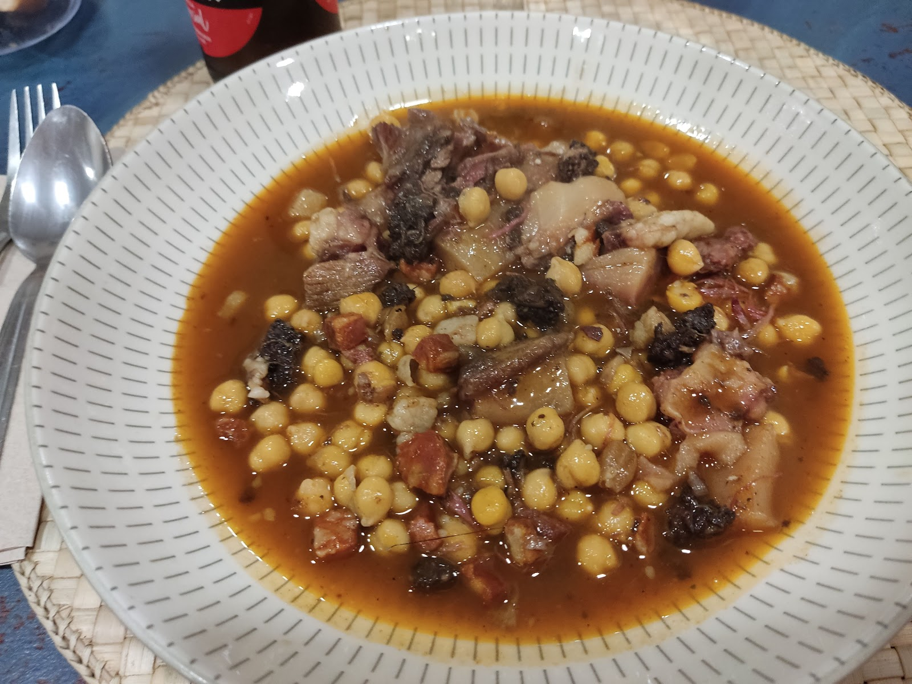
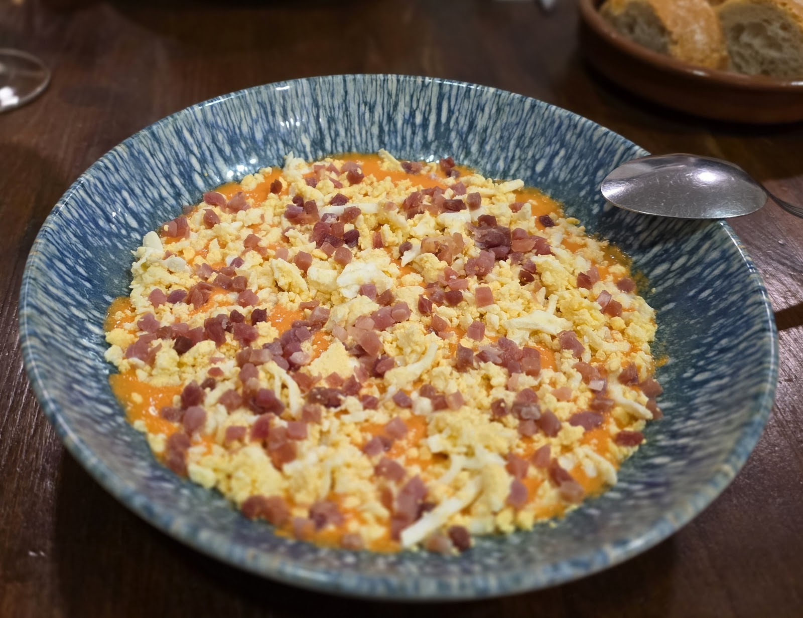
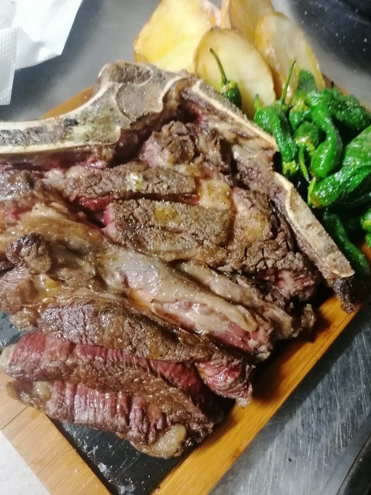
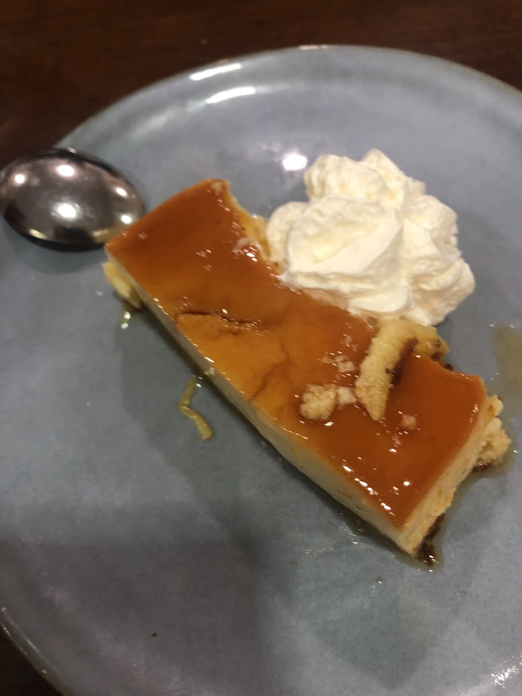
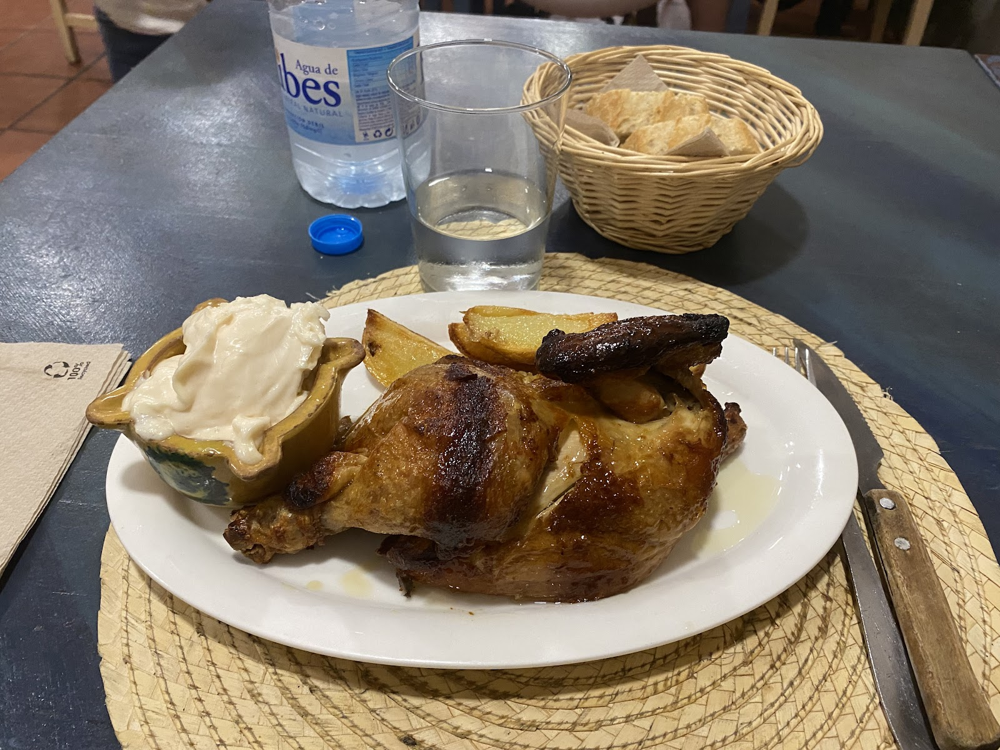

Menú de barrio, calidad-precio insuperableA neighbourhood menu, unbeatable value
Un menú a un precio irrisorio con una calidad y cantidad que no tienen nada que envidiar. Comida casera con algún toque original y ambiente de barrio de toda la vida.A menu at a tiny price with quality and portions second to none. Home cooking with the odd original touch and a true neighbourhood feel.





